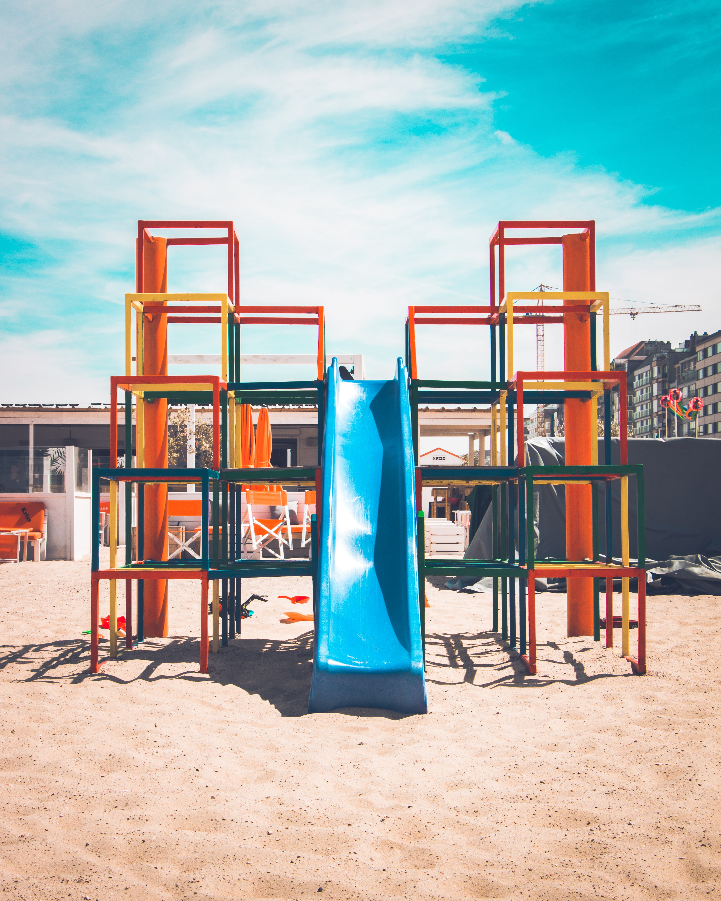
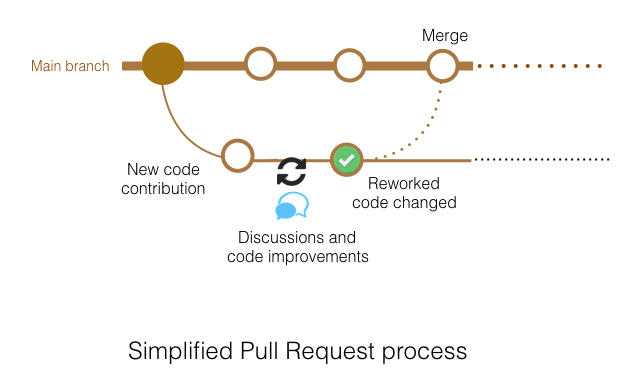

Beyond your script
An introduction to collaborative coding and software engineering good practice
Alessandro Felder
Research Software Engineer at
- Sainsbury Wellcome Center Neuroinformatics Unit
- UCL Advanced Research Computing
Alessandro Felder
I am passionate about making “good” research software, biological image analysis and about open, collaborative science.
Initial checkup
Prerequisites
- a GitHub account
- open these slides on your laptop: https://neuroinformatics.dev/course-software-good-practice/
The next steps
The next steps
Table of contents
- coding collaboratively 🤝
- writing documentation 📃
- writing tests ✅
- evaluating and improving the quality of code 🤔
- creating a python package 📦
We are in a playground today

- make a mess
- break things
- be active
- embrace the chaos
- have fun
We are in a playground today
- some things will come easy to you…
- …others not
- if you find something easy, there are optional exercises…
- … or you can help others.
Set up your playground
- fork and clone the repo locally as described in Exercise 1
- set up a conda environment for today:
Collaborative coding
Collaborative coding
- benefits from different perspectives and division of labour
- avoids re-inventing the wheel
- needs async communication and coordination of tasks
Collaborative coding
- for example, someone else in your lab, or someone in a partner lab in a different time zone.
The development cycle

open / choose a task
write a solution to the task independent of main code
open a solution proposal
review a solution proposal
Exercise: Have you set up your playground?
What makes (research) code good?
Documentation
A simple Python function
What does this function do?
Demo: document what the function does?
The Matplotlib documentation
matplotlib.colors.get_named_colors_mapping()
- Where does this information come from?
- How is it generated?
The Matplotlib source code
This is called a “docstring” in Python
def get_named_colors_mapping():
"""Return the global mapping of names to named colors."""
return _colors_full_mapDocstrings (should) follow an agreed convention
A first task: writing a docstring
Building and deploying docs
You can automate docs building and deploying. See for example the movement docs action and its API reference.
Testing
Why should you test
- to find (current and future) bugs earlier and more quickly (before you publish your results, ideally!)
- to have confidence in your current and future code
- important for research1
- (to document how you expect your code to behave)
Why should you test your research code?
“Second, a 15-year-old bug was found … (the bug was fixed … during preparation of this manuscript). The bug essentially reduced the size of the image searched for clusters, underestimating the severity of the multiplicity correction and overestimating significance.” 1
Why should you test your research code?
“An in-house data reduction program introduced a change in sign for anomalous differences.
This program, which was not part of a conventional data processing package, converted the anomalous pairs (I+ and I−) to (F− and F+), thereby introducing a sign change.
We very sincerely regret the confusion that these papers have caused and, in particular, subsequent research efforts that were unproductive as a result of our original findings.” 1
Why should you test you research code?
“…basically, I forgot to set something to zero after I finished looping through the loop that moved the motor [and that caused a fire in the lab]”1
What things should we sanity check about the calculate_fastest_time function?
What things should we sanity check about the calculate_fastest_time function?
Demo: write some sanity checks
Switch to VS Code
Testing with pytest
A neater way to run sanity checks
Exercise: convert a sanity check into a test
How to think about what to test
What we’ve called sanity checks are referred to as “test cases”. Try to cover all “edge” cases1: what happens if …?
- “zero”: I pass an invalid input
- “one”: I pass a simplest possible input
- “two”: I run the code several times
- “two to max-1”: I pass a typical input
- “max”: I pass the extremest allowable input
- “max+1”: I pass a too extreme input
How to think about what to test
What we’ve called sanity checks are referred to as “test cases”. For example, what happens/should happen when you call…?
- “zero”:
calculate_fastest_time("this is a string") - “one”:
calculate_fastest_time([]) - “two”:
calculate_fastest_time([1.0]); calculate_fastest_time([2.0]) - “two to max-1”:
calculate_fastest_time([1.0, 0.5, 2.0]) - “max”:
calculate_fastest_time([1.0, 0.5, 2.0, sys.float_info.max]) # other extreme cases? - “max+1”:
calculate_fastest_time([1.0, 0.5, 2.0, float("inf")])
Some software testing vocabulary
Testing at different levels
- unit tests: tests one function
- integration tests: tests several functions work together as expected
- end-to-end tests: tests an entire pipeline from start to finish
Some software testing vocabulary
Types of test:
- negative test: test that the expected error is raised when bad input is passed
- regression test: test that behaviour hasn’t changed
Be careful
No matter how much you test, things can still go wrong! (and it’s OK to make mistakes!)
“Program testing can be used to show the presence of bugs, but never to show their absence!” ― Edsger W. Dijkstra
Code Quality
Code smells
A code smell is a surface indication that usually corresponds to a deeper problem in the system.
- Martin Fowler
An example of a code smell
def calculate_fastest_time(time_list):
fastest_time = time_list[0]
for time in time_list:
if time > fastest_time:
fastest_time = time
return fastest_time
def print_fastest_time(time_list):
fastest_time = time_list[0]
for time in time_list:
if time > fastest_time:
fastest_time = time
print(f"This is the fastest time: {fastest_time} 🚀")What might be not-so-good about these two functions?
Exercise: don’t repeat yourself (DRY)
Packaging
What does packaging mean?
The Python package structure
└── my-awesome-package/
├── LICENSE
├── MANIFEST.in
├── README.md
├── pyproject.toml
├── tox.ini
├── docs/
├── my_awesome_package/
│ └── __init__.py
│ └── do_something_awesome.py
└── tests/
├── __init__.py
└── test_placeholder.pyAutomating package creation
Automating package creation
Also comes with recommendations.
pip knows what to do
If you have this structure, pip will know where to put your Python code in your conda environment, so you can re-use it from anywhere.
pip install .The Python Package Index (PyPi)

- Once it’s ready, publish your package.
- Python packaging tutorial
This structure will also come in handy when you want to distribute your package widely.
Summary
└── my-awesome-package/
├── LICENSE
├── MANIFEST.in
├── README.md
├── pyproject.toml
├── tox.ini
├── docs/
├── my_awesome_package/
│ └── __init__.py
│ └── do_something_awesome.py
└── tests/
├── __init__.py
└── test_placeholder.pySummary
Summary
- coding collaboratively 🤝 (issues and pull requests)
- writing documentation 📃 (docstrings, sphinx)
- writing tests ✅ (pytest, test cases)
- evaluating and improving the quality of code 🤔 (code smells, refactoring, DRY)
- creating a python package 📦 (cookiecutter, pypi)
Retrospective
- Anonymously tell us what you thought on this ideaboardz…
- … and get in touch anytime!
Resources
Code review and issue tracking resources
- Step-by-step guide
- Advice on how to do code review:
- as an author
- as a reviewer
- The Zeigarnik effect: Why creating issues helps you switch off
Documentation resources
Testing resources
Refactoring resources
Packaging resources
RSE Community
More context about Research Software Engineering
- The four pillars of RSE
- The Software Sustainability Institute
- The hidden REF – Celebrating all research outputs
- Article about RSE careers

Collaborative coding and software engineering good practice (BIIG hackday) | 2024-07-15